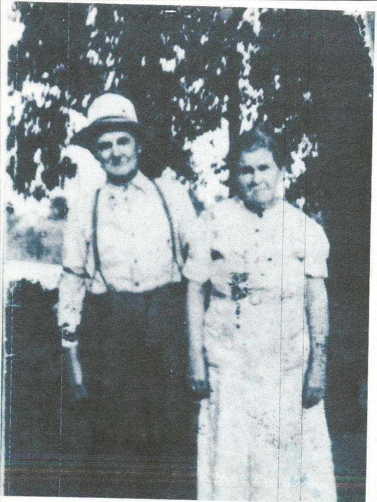
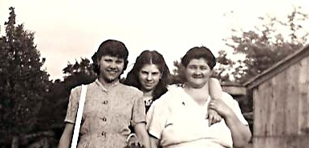
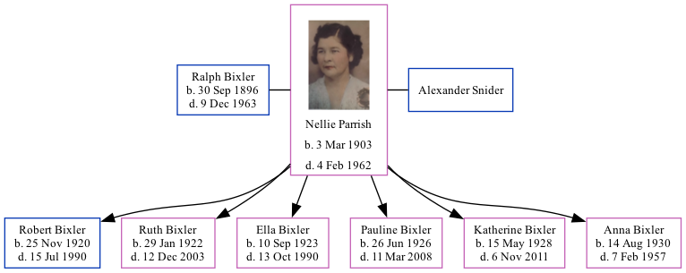

Nellie May Snider (née Parrish) 1903 - 1962
[ Home ] | [ Calendar ] | [ Surnames Index ] | [ Family History ]Nellie Parrish, the wife of Ralph Voris Bixler (the fourth cousin twice-removed on the mother's side of Nigel Horne), was born in Cataract, Owen, Indiana, USA on Mar 3, 19031 and was married twice - to Ralph Bixler (on Jun 28, 1945 in Martinsville, Morgan, Indiana, USA) Alexander Snider1. She had 6 children with Ralph Bixler: Robert Edward, Ruth Marie, Ella Louise, Pauline, Katherine and Anna Mae. On Apr 3, 1930, she lived in Joe Zink Road, Clay, Owen, Indiana2.
She died on Feb 4, 1962 in Greenfield, Hancock, Indiana and was buried at Crown Hill Cemetery, Indianapolis, Marion, Indiana after Feb 4, 1962.
Children
- Robert Edward was born on Nov 25, 1920
- Ruth Marie was born on Jan 29, 1922
- Ella Louise was born on Sep 10, 1923
- Pauline was born on Jun 26, 1926
- Katherine was born on May 15, 1928
- Anna Mae was born on Aug 14, 1930
Citations
- United States Marriages - Findmypast
- US Census 1930 - Findmypast (was age 27 and the wife of the head of the household)
Media
Nellie Mae Parrish -2

Nellie Mae Parrish
Nellie Parrish

Pauline and Annie Bixler with Nellie Parish

United States Marriages - R_75585969/2
Indiana Marriages 1811-1959 Transcription - R_75585969
United States Marriages - FS/MAR/32970406/2
1940 US Census Transcription - USC-1940-1456124391
United States Marriages Transcription - FS-MAR-32970406-1
1930 US Census Transcription - USC-1930-004950638-00007-039
Family Tree
Generated by Ged2Site. Last updated on Jul 20, 2025